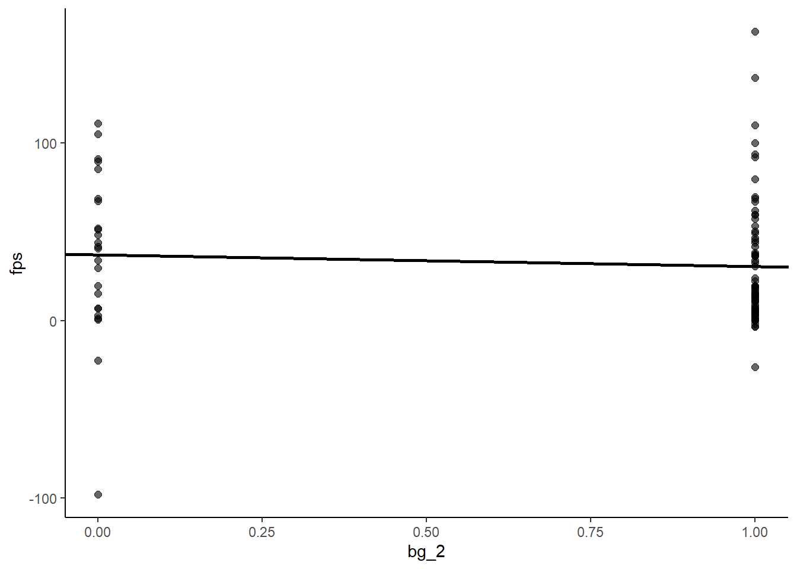
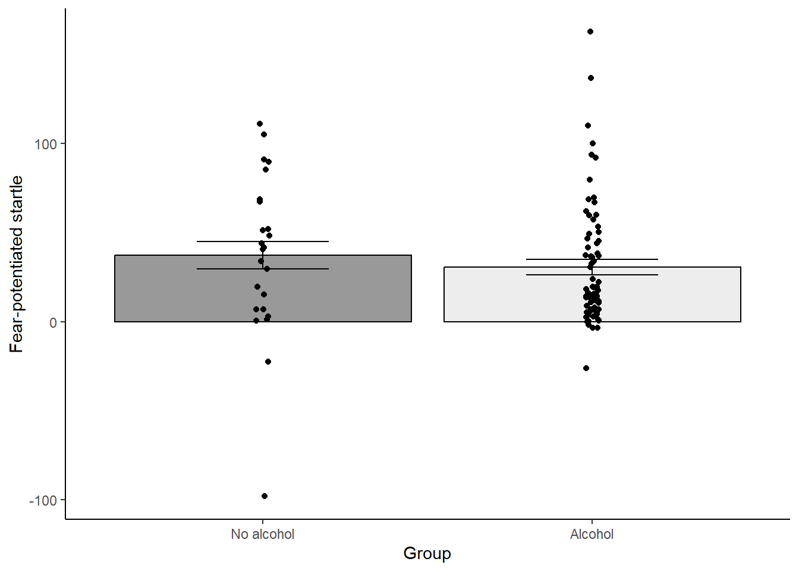

One dichotomous predictor coded with one regressor (this unit).
Learn models with multiple regressors in later units:
One-way between subject ANOVA (One predictor, multiple regressors)
Multiple predictors and regressors
Additive: ANCOVA, General Additive Models
Interactive: Factorial ANOVA, Attitude Treatment Interactions, General Interactive Models
Repeated measures & mixed model designs
5.2 Dichotomous Predictor
Question: Consider a regression model with one dichotomous predictor and the typical continuous DV. What other statistical test is this regression equivalent to?
An independent samples (between subjects) t-test comparing the two groups that are represented by the two levels of the predictor on the mean of the DV.
5.3 Coding Dichotomous Predictors
Question: How do we handle analysis of dichotomous predictors in regression?
Very simple! We will assign two “arbitrary” values to a regressor \(X\) to represent the two levels (groups) in the dichotomous predictor variable.
There are 2 coding schemes that we will need to learn:
Dummy coding (reference/control group)
Contrast coding (for now, unit weighted, centered coefficients).
We also need to learn distinction between weighted vs. unweighted means (optional).
5.4 Dummy Coding
Dummy coding with a dichotomous variable:.
Dummy coding involves assigning 1’s and 0’s to the regressor in a specific pattern. For the two level simple case, assign a 0 to the control/reference group and a 1 to the target or experimental group. (Doesn’t really matter which is which; but what would change? What about -1 vs. 1)
Question: What is different about the NHST of the alcohol effect with bg_2 vs BAC and why?
5.7 >SSE leads to >SEs and <Power
p-value is worse (bigger) for bg_2 than BAC. Taking a quantitative variable and dichotomizing (or trichotomizing, etc.) throws away potentially valuable information in your predictor variable. The dichotomous variable will generally be a worse predictor. This will produce a model with more error (> SSE) and less power (> p-values) to test hypotheses.
Don’t dichotomize unless there is a REALLY good reason. GLM can accommodate quantitative variables anywhere you would have previously used a categorical variable.
Question: What is the interpretation of \(b_1\) (bg_2) in this model?
Still change in \(Y\) for one unit change in \(X\).
However, a one unit change in \(X\) moves from the no-alcohol group (coded 0) to alcohol group (coded 1). Therefore \(b_1\) is now the predicted change in \(Y\) between no-alcohol and alcohol groups. This is simply the difference in the mean of the two groups!
Question: Where is \(b_1\) (bg_2 effect) on this graph?
Code
plot_d <- data |>ggplot(aes(x = bg_2, y = fps)) +geom_point(alpha = .6, size =2) +geom_abline(aes(intercept =coef(m_d)[1],slope =coef(m_d)[2]),linewidth =1) plot_d

It is the slope of the line (as before). The line goes through the mean of FPS scores for each of the two groups.
Code
labels <-tibble(means =c(round(mean(subset(data, bg_2 ==0)$fps), 2), round(mean(subset(data, bg_2 ==1)$fps), 2)),vars =c("bg_1", "bg_2"))plot_d +annotate("text", x =-.15, y = labels$means[1], label = labels$means[1], size =6, color ="blue") +annotate("text", x =1.1, y = labels$means[2], label = labels$means[2], size =6, color ="blue") +annotate("text", x =0, y =-140, label ="No Alcohol", size =5, color ="blue") +annotate("text", x =1, y =-140, label ="Alcohol", size =5, color ="blue") +coord_cartesian(xlim =c(0, 1), (ylim =c(-100, 175)),clip ="off") +theme(plot.margin =unit(c(0, .75, .5, .75), "inches"))
No. The probability of getting a \(b_1\) of -6.568 or more extreme is 0.461 if the null hypothesis is true. This is not sufficient evidence to reject the null.
5.9 Model Comparisons (\(\beta_1\))
Question: What two models are you comparing to test your hypotheses about alcohol’s effect on FPS?
PRE or \(\eta_p^2\) is the proportion reduction in error due to the effect (the parameter). Use the same models that you would use to test the hypotheses about that parameter.
Yes. The probability of getting a \(b_0\) of 37.117 or more extreme is 0.0000052 if the null hypothesis is true. Very unlikely so reject null. Conclude \(B_0 > 0\).
5.11 Model Comparisons (\(\beta_0\))
Question: What two models are you comparing to test your hypotheses about mean FPS for sober people?
PRE or \(\eta_p^2\) is the proportion reduction in error due to the effect (the parameter). Use the same models that you would use to test the hypotheses about that parameter.
\(R^2\) is the proportion of explained variance over total variance in \(Y\). The total variance is equivalent to the SSE of the Mean Only model (WHY?).
Question: Is \(b_0\) (33.83) the mean of FPS in the sample?
It is the unweighted mean.
Weighted and unweighted means emerge as concepts with grouped data. An unweighted mean is the mean of the group means, ignoring the \(N\) in each group.
Code
data |>summarise(mean =mean(fps),sd =sd(fps))
# A tibble: 1 × 2
mean sd
<dbl> <dbl>
1 32.2 37.5
Code
data |>group_by(bg_2) |>summarise(mean =mean(fps),sd =sd(fps))
# A tibble: 2 × 3
bg_2 mean sd
<dbl> <dbl> <dbl>
1 0 37.1 46.1
2 1 30.5 34.4
5.16\(b_0\) as Weighted Mean
A weighted mean is the mean of the groups weighted or proportional to their sample sizes. It is also equal to the grand mean of the DV ignoring group.
Question: How can you get \(b_0\) to reflect the weighted mean?.
Mean center \(X\). This is the same as we did with a quantitative variable to make \(b_0\) equal the grand mean.
data |>ggplot(aes(x = bg_2o, y = fps)) +geom_point(alpha = .6, size =2) +geom_abline(aes(intercept =coef(m_o)[1],slope =coef(m_o)[2]),linewidth =1)
5.20 Publication Quality Figure
Code
x <-tibble(bg_2 =c(0,1))preds_pub <- x |>bind_cols(predict(m_d, x, se.fit =TRUE) |>as_tibble())
Code
plot_pub <-ggplot() +geom_col(aes(x =as.factor(preds_pub$bg_2), y = preds_pub$fit, fill =as.factor(preds_pub$bg_2)),alpha = .4, color ="black") +geom_jitter(aes(x =as.factor(data$bg_2), y = data$fps), width = .02, height =NULL) +geom_errorbar(aes(ymin = preds_pub$fit-preds_pub$se.fit, ymax = preds_pub$fit+preds_pub$se.fit, x =as.factor(preds_pub$bg_2)), width = .4) +scale_fill_manual(values =c("black", "light grey")) +scale_x_discrete(breaks =c(0, 1),labels =c("No alcohol", "Alcohol")) +theme(legend.position ="none") +labs(x ="Group",y ="Fear-potentiated startle")
Code
plot_pub

Bars display point estimates for fear potentiated startle by group from the general linear model. Confidence intervals display +/- 1 standard error for these point estimates.